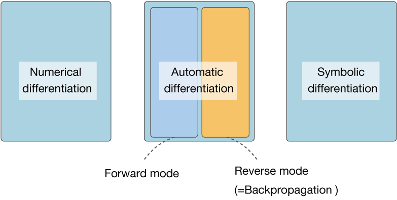

The central technique in Deep Learning frameworks is backpropagation. Backpropagation is sometimes referred to as “automatic differentiation” in some literature. It should be noted that this term “automatic differentiation” - especially in the academic field - refers to a more limited method. Here, we will supplement the term automatic differentiation.
NOTE
Automatic differentiation, if interpreted literally, is a method (technique) for automatically obtaining a derivative. By “automatically obtaining a derivative,” I mean a computer (not a person) compute a derivative. Specifically, it refers to a system in which, if a calculation (function) is coded, the derivative of the calculation is automatically calculated by a computer.
There are three main ways to find a derivative in a computer program: the first is numerical differentiation. It performs the normal computation (forward propagation) twice, giving a small difference to the variable, as implemented in “Step 4”. Then, from the difference in their outputs, the approximate derivative is obtained. Numerical differentiation is easy to implement, but the problem is that errors are easily included in the output and the computational cost is high when dealing with functions with many variables.
The second method is symbolic differentiation. This is a way to find the derivative using a formula for the derivative, just like you learned in high school math. The input is a “formula” and the output is a “formula” (a formula can be expressed in the form of data in a tree structure). This method is used by Mathematica, MATLAB, and others.
WARNING
The output of symbolic differentiation is a differentiated “expression” - that is, a derivative - at which point no numerical computation is done. After obtaining the derivative, we can find the derivative at a concrete value (e.g., \(x=3.0\)).
The problem with symbolic differentiation is that it tends to be heavily inflated. Especially in non-optimized implementations, the formula can quickly become huge (indeed, the formula “explodes”). In addition, calculations such as those handled by Deep Learning need to efficiently find the “value” of a derivative (rather than an expression) for a large number of variables. This requires a more appropriate approach.
The third method is automatic differentiation. This is how you find the derivative using the chain rule. If any function is given as a program, its derivative can be computed efficiently and accurately. Backpropagation is also included in one of the automatic differentiation. To be more precise, automatic differentiation can be divided into two main categories, “forward mode” and “reverse mode”. Backpropagation corresponds to the latter’s “automatic differentiation of reverse mode”.
NOTE
Both methods use chain rules to find the derivative, but the “path” is different. If you have one output and you want to find the derivative of that one output variable, the automatic derivative in REVERSE mode is suitable. In many machine learning problems, the output is a single variable, so automatic differentiation in reverse mode is used. In this book, no further explanation of forward mode automatic differentiation is given, and if you are interested in forward mode autodifferentiation, you can refer to the literature [6][7].
In summary, the method of calculating a derivative in a computer program is shown in Figure A-1.

Figure A-1: A computer program for calculating a derivative
As shown in Figure A-1, the term “automatic differentiation” refers to one of the methods of calculating a derivative on a computer. The Deep Learning framework is positioned as an implementation of the “automatic differentiation of reverse mode” within it. However, depending on the literature, there are cases where we do not distinguish between forward and reverse modes, but refer to backpropagation and call it “automatic differentiation”.
NOTE
Automatic differentiation has long been an area of study, as one of the academics. It has a long history and has accumulated a lot of important knowledge. Unfortunately, there has not been much interaction with the field of machine learning. Recently, with the boom in deep learning, there has been an increased focus on the field of automatic differentiation, and new exchanges have begun between fields such as machine learning and programming languages and the field of automatic differentiation.